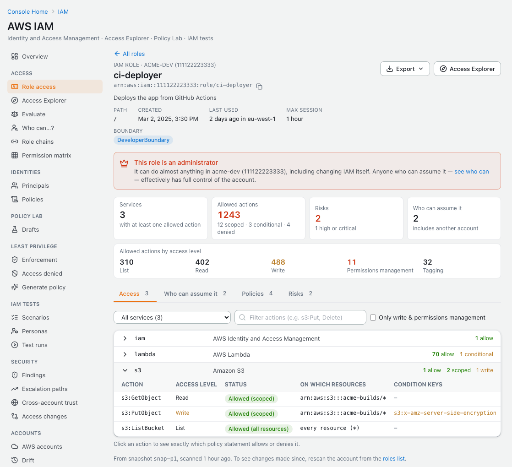
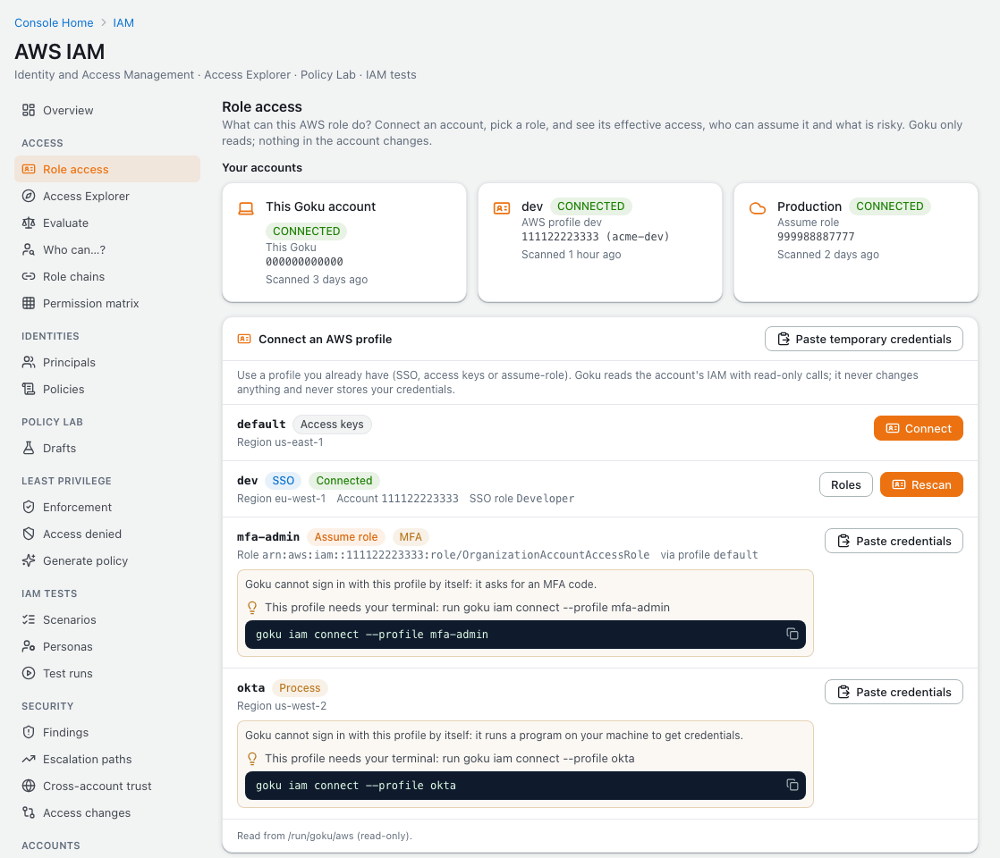
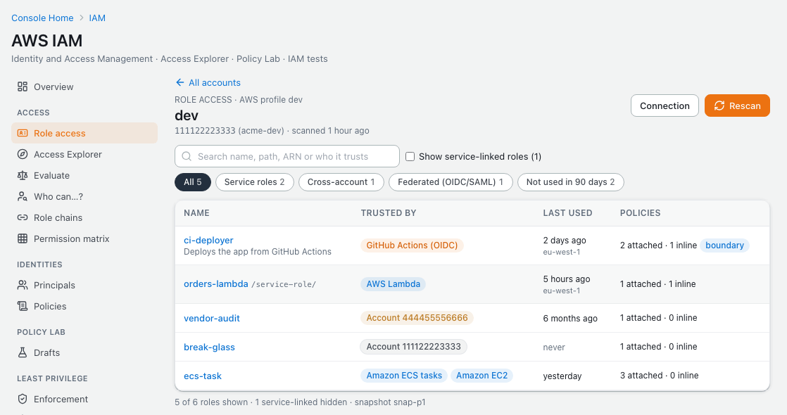
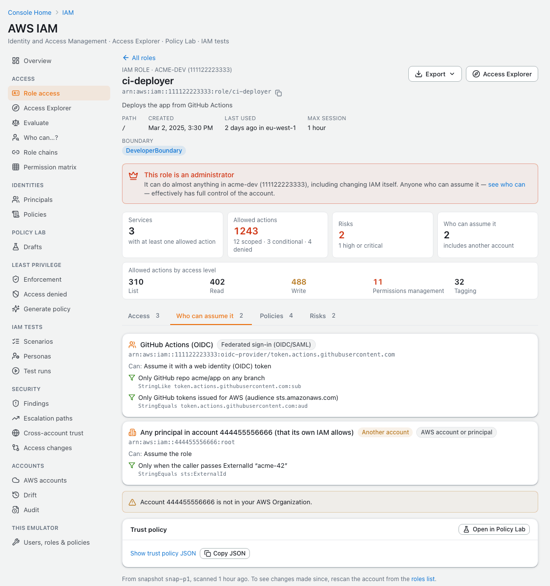

Effective permissions from your AWS profile, locally and read-only. Goku's IAM Lab connects to your real AWS account with a profile you already have, scans its roles, and shows for any role every action it is allowed and the policy statement behind it, who can assume it in plain words, and what is risky. Nothing in the account changes, and your credentials stay in memory.
Goku was formerly called Mimir. Same product, new name: the image is now tanujsoni027/goku (it was tanujsoni027/mimir-aws) and the command is goku. See old and new names.
On this page: What you see · Read-only · Install · Connect · Pick a role · MCP · FAQ
A role's access is spread over its trust policy, managed and inline policies and permissions boundary. The IAM Lab puts it together, from a scan of the account:

sts:GetCallerIdentity; IAM operations that start with Get, List or Simulate; the Access Analyzer checks ValidatePolicy, CheckNoNewAccess, CheckAccessNotGranted and CheckNoPublicAccess; Organizations Describe and List calls; and SSO's GetRoleCredentials. sts:AssumeRole runs only to follow an assume-role profile. Anything else fails before it is signed.~/.aws is mounted read-only, and only the IAM Lab reads it.The profile needs IAM read access: the AWS managed policies IAMReadOnlyAccess, SecurityAudit or ReadOnlyAccess are enough.
Role access needs Goku 4.2 and goku CLI 0.6.0 or later. On macOS and Linux:
$ curl -fsSL https://tanuj24.github.io/goku/install.sh | sh
On Windows, in PowerShell:
PS> irm https://tanuj24.github.io/goku/install.ps1 | iex
Already installed? Run goku update --cli, then goku update.
goku start mounts your AWS config folder read-only into Goku (~/.aws, or %USERPROFILE%\.aws on Windows, at /run/goku/aws), so the console can list your profiles. Files that AWS_CONFIG_FILE or AWS_SHARED_CREDENTIALS_FILE name elsewhere are mounted read-only too. goku update recreates an existing container to add the mount, and goku doctor shows whether it is there. GOKU_AWS_PROFILES=off leaves it out.
Running the image with plain Docker? Add the mount to your docker run:
$ mkdir -p ~/.goku/data
docker run -d --name goku \
-p 8080:80 -p 4566:4566 -p 5500-5524:5500-5524 \
-v /var/run/docker.sock:/var/run/docker.sock \
-v ~/.goku/data:/app/data \
-v /tmp/goku-glue:/tmp/goku-glue \
-v ~/.aws:/run/goku/aws:ro \
tanujsoni027/goku:latest
In PowerShell, the mount is -v "$env:USERPROFILE\.aws:/run/goku/aws:ro". The rest of the command is on the install page.
Open IAM in the console and choose Role access, http://localhost:8080/iam/roles. Your profiles are listed with their type and region; Connect scans the account's IAM (roles, users and policies) into a snapshot.

~/.aws. A profile that needs your terminal shows the command to run.$ goku iam profiles # type, region, SSO account and role; never keys
goku iam connect --profile prod # sign in, connect read-only, scan
$ goku iam connect --profile prod
getting credentials for profile prod from the AWS CLI…
connecting profile prod to Goku (read-only)…
✔ profile credentials terminal session
✔ sts:GetCallerIdentity arn:aws:sts::123456789012:assumed-role/Admin/me
✔ iam:GetAccountAuthorizationDetails allowed
– iam:SimulatePrincipalPolicy optional — AccessDenied: not allowed
Connected acme-prod (123456789012) with profile prod: 213 roles, 45 users, 1,204 policies.
goku iam connect takes the profile from --profile, else AWS_PROFILE, the only profile or default, or asks. It gets the profile's credentials on your machine with the AWS CLI (aws configure export-credentials), so SSO, MFA codes and credential helpers work, and it runs aws sso login first when an SSO sign-in has expired. Goku receives a session in the body of one request, never on a command line, on disk or on screen. Without the AWS CLI, only access-key profiles work.
No goku CLI at hand? Paste temporary credentials in the console takes the output of aws configure export-credentials --profile NAME --format env.
The roles list shows who each role trusts, when it was last used and its policies, with filters for service roles, cross-account roles, federated (OIDC or SAML) roles and roles not used in 90 days. Service-linked roles are hidden unless you ask for them.

$ goku iam roles # NAME, TRUSTED BY, LAST USED, POLICIES
goku iam roles deploy # search name, path, ARN or who it trusts
goku iam access ci-deployer # who can assume it, policies, access per service, risks
goku iam access ci-deployer --service s3,iam # and its S3 and IAM actions
goku iam access ci-deployer --all --json > ci-deployer.json
goku iam access ci-deployer --open # the role in the console
--profile NAME or --connection ID picks the account; the default is the profile you scanned most recently. The answers come from the scan, not from new calls to AWS, so rescan from the roles list, or run goku iam connect again, to see changes made since. In the console, Export saves a role's access as JSON, Markdown or CSV.

Goku's MCP server has four tools for the roles of your AWS account:
goku_iam_aws_profiles goku_iam_connect_aws_profileYour AWS profiles, never their keys, and a read-only connection and scan of one account.goku_iam_aws_roles goku_iam_role_accessThe account's roles and who they trust, and everything one role can do. Both read Goku's scan, not AWS.When a profile needs you, for an SSO sign-in or an MFA code, the tool says which command to run in your terminal. Ask, for example:
No. Every AWS call Goku makes with a profile passes a read-only guard: only reads such as sts:GetCallerIdentity and IAM Get, List and Simulate operations can be sent, and anything else fails before it is signed, even when the profile is an administrator.
In Goku's memory, only until they expire. They are never saved, logged or returned by any API. Your ~/.aws folder is mounted read-only, and only the IAM Lab reads it.
Access keys, IAM Identity Center (SSO) and assume-role profiles. Profiles that need your terminal, such as an MFA code, a credential helper or an expired SSO sign-in, connect with goku iam connect --profile NAME.
IAM read access. The AWS managed policies IAMReadOnlyAccess, SecurityAudit or ReadOnlyAccess are enough.
~/.aws folder?Set GOKU_AWS_PROFILES=off for the goku CLI and it doesn't mount the folder. With plain Docker, leave out the -v ~/.aws:/run/goku/aws:ro mount.